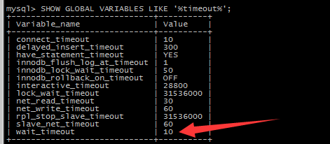

1.查看和设置mysql的wait_timeout的值
SHOW GLOBAL VARIABLES LIKE '%timeout%';

设置wait_timeout的值
SET GLOBAL wait_timeout=10;
2.当程序中有超过10秒的执行后,再次去执行一条sql语句 , 就会报错
Warning: Error while sending QUERY packet 或者 MySQL server has gone away
3.因此我们在使用单例的PDO对象的时候,要进行时间上的判断,比如我上面的例子,超过10秒的PDO对象,要重新new一下
<?php
$option=array();
$timeout=time()+10;
$pdo=new PDO("mysql:host=localhost;dbname=my_test","root","xxxx",$option);
var_dump($pdo);
/*
object(PDO)#1 (0) {
}
*/
//此时执行了一个11秒时间的操作
sleep(11);
var_dump($pdo);
/*
object(PDO)#1 (0) {
}
*/
//此时需要重新new一下PDO对象,才可以继续操作,否则报错
if($timeout<time()){
$pdo=new PDO("mysql:host=localhost;dbname=my_test","root","xxxxx",$option);
}
$pdo->query('set names utf8');
$sth=$pdo->prepare("select * from index_test");
$sth->execute(array("id"=>2000));
$res=$sth->fetchAll();
print_r($res);